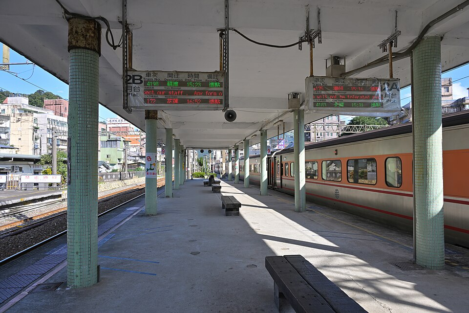
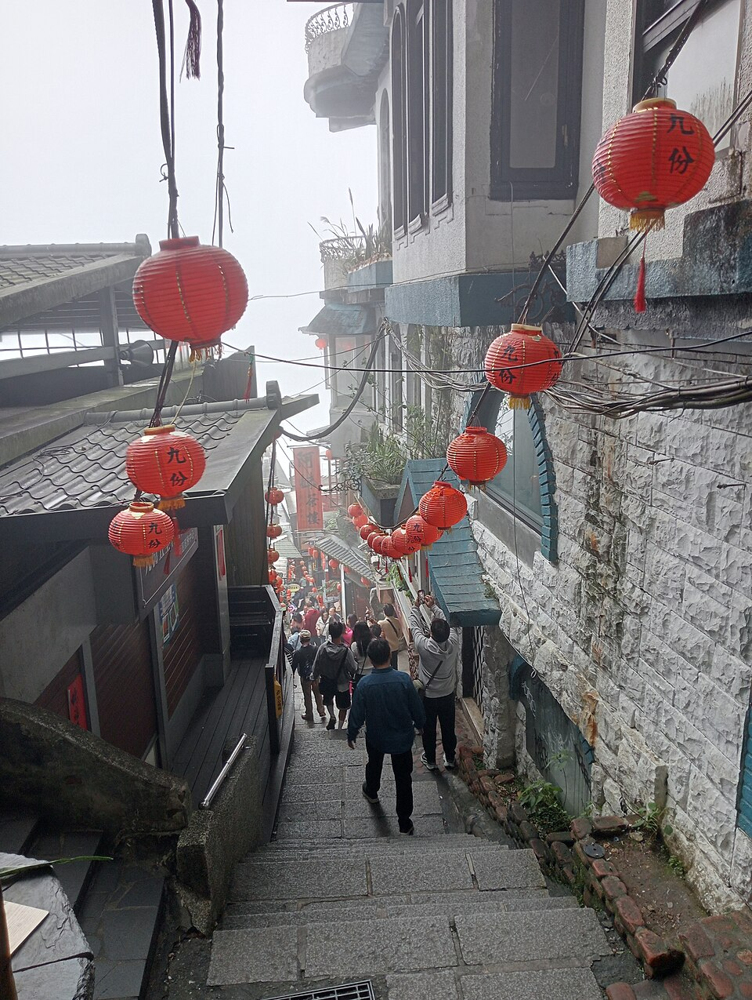
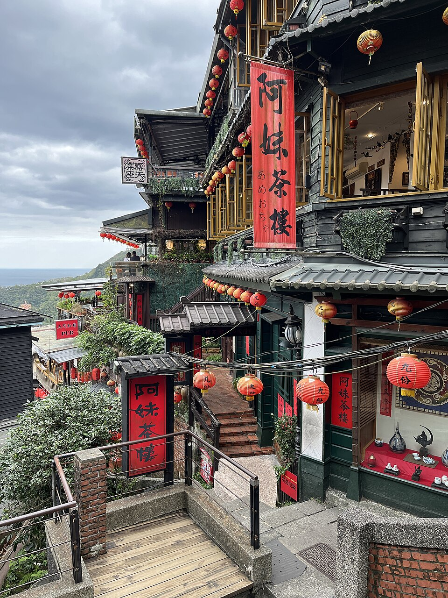
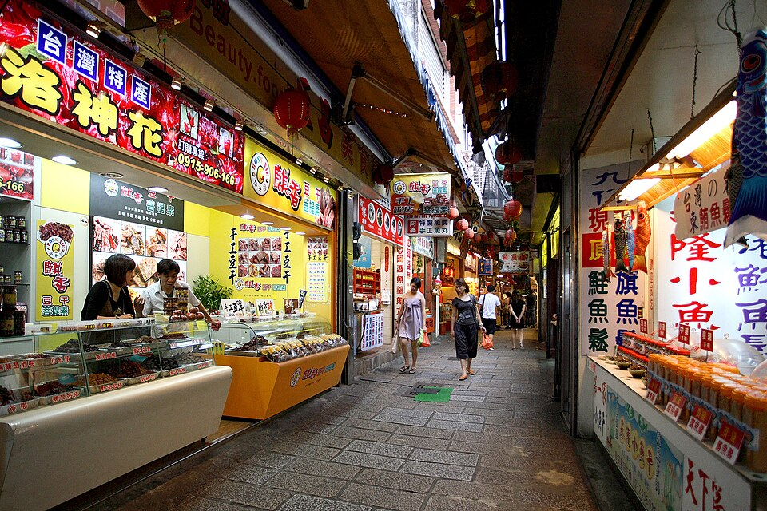
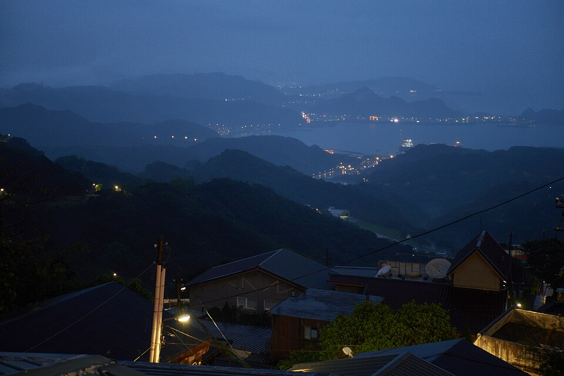

09:30–10:20
台北車站搭火車出發
從台北車站直接搭台鐵往瑞芳，區間車或自強號都可以，目標是大約 10:20–10:40 抵達瑞芳即可。這一段不用搶快，因為真正的旅行感從瑞芳站出來才開始。實際班次和每班的停靠站，看上面的「去程火車時刻」。
搭火車輕鬆啟程早餐可簡單吃
先感受一下今天會遇到的畫面：瑞芳車站的月台、九份的紅燈籠階梯、阿妹茶樓與老街。店家自己的照片，點各店的「📍 地圖與照片」就能看到最新的。




點任何一班展開完整停靠站與時間。小提醒：9:20 過後下一班要等到 10:05（9:30–10:00 這段沒有車），所以要嘛趕 9:20 前的班次，要嘛從容一點搭 10:05。
班次資料來自台鐵開放資料（2026-08-06 版，已核對平日與週末四天皆同，僅 214 車次為週六日加開）。出發當天請以台鐵官網或「台鐵 e 訂通」App 顯示為準。
回程有兩條路可以選，都收合在下面，要用再點開：走法一是公車下山到瑞芳、換火車回台北；走法二是 965 快速公車從九份老街直接坐回西門。
第一段（公車下山）：在「九份老街」站牌搭往瑞芳／台北方向的公車，車程約 15–20 分鐘，在區民廣場（就在瑞芳火車站旁）下車。公車是看班距發車、沒有固定到站時刻，實際下一班用下面的即時查詢最準：
第二段（火車回台北）：瑞芳 → 台北，下午到傍晚的班次如下，點任何一班展開停靠站：
火車班次同樣來自台鐵開放資料（2026-08-06 版，已核對四天平假日皆同）。自強號全車對號，臨時上車不一定有位子；區間車最自由。
在「九份老街」站牌搭 965（台灣好行九份金瓜石線，往板橋方向），中途不用換車，直接在「捷運西門站」下車（我有核對過 965 的完整站牌表，確定有停）。車程約 1 小時出頭，假日塞車會更久。
這是一條以火車為核心的順走版路線：早上先把瑞芳站周邊吃一輪，中午轉九份，下午看體力決定要不要再續攤。
從台北車站直接搭台鐵往瑞芳，區間車或自強號都可以，目標是大約 10:20–10:40 抵達瑞芳即可。這一段不用搶快，因為真正的旅行感從瑞芳站出來才開始。實際班次和每班的停靠站，看上面的「去程火車時刻」。
建議採「少量多樣」模式，優先挑 2–4 樣：酥餅、龍鳳腿、番薯粿、芋圓或豬腳湯，不要一開始就吃到過飽。
這一段可依現場狀況選公車或計程車。如果你想衝第一波午後座位，計程車會比較俐落；若想省力省心，公車也可。
把這段當作今天的核心儀式感：坐下來、看山海、慢慢喝。若現場需候位，就改成先逛老街 30–45 分鐘，再回來接手這段行程。
可以採輕鬆版：逛老街、買草仔粿、再吃芋圓；也可以採收尾版：喝完就慢慢回瑞芳，不勉強再塞景點。
你這趟上午落點在瑞芳，最適合做成「小吃拼盤式行程」：看哪家剛好順路、排隊短，就先拿下。
適合當火車下車後的第一站，酥餅與鹹豆漿組合很像替今天按下開機鍵。
屬於瑞芳代表性小吃，建議一人 1–2 支就好，吃個味道即可，不要太早戰力耗盡。
如果你想把這趟弄得更有地方味，番薯粿很值得納入，份量不大、辨識度高。
若當天天氣悶濕或你想坐一下，這類熱食是很好的中場補給，但建議兩人分食更剛好。
如果你中午確定去九份喝甜飲，就不用急著在瑞芳先吃大碗甜品；留一個甜點胃，下午更舒服。
建議公式：1 個主食感 + 1 個炸物 + 1 個地方小吃，最多再加 1 個飲料或甜點，剛剛好。
中午到九份，你的主目標可直接鎖定暇咖啡；其餘名單則作為候位時、臨時變心時或想續攤時的補位選手。
適合被放在整趟旅程最亮的時段。你上午吃瑞芳、中午上九份，節奏很順；若需候位，就先逛老街、買草仔粿、拍幾張山城照，再回來喝。
真正好用的一日遊，不是排得滿，而是遇到人潮、下雨、體力波動時還能漂亮轉彎。
先去九份老街散步 30–45 分鐘，吃草仔粿或芋圓，之後再回來；若仍太久，就改投吾穀茶糧或其他茶館。
九份就改成「景觀散步 + 一杯飲料」模式，不一定要再補甜點。下午茶也可以是喝茶，不一定要吃滿。
瑞芳縮成 2 樣小吃，快速上九份找室內座位，把長時間停留交給茶館或咖啡館，減少在戶外站太久。
瑞芳吃近車站的 2–3 攤後，直接計程車到九份，再把下午重點放在一家店與一段老街散步即可。
最簡單就是喝完下午茶就回瑞芳搭火車，這樣仍然是一趟完整的一日遊，不算縮水，叫做收得漂亮。
下午茶後可再補一輪九份老街小吃，或拉長拍照散步時間，讓山城氛圍變成今天最後的延伸章節。

誰先掏錢就選誰（S 或 T），寫上項目和金額。全部集中記在這裡，最後下面會自動算好「平分之後，誰要給誰多少錢」。記錄存在這支手機的瀏覽器裡，關掉網頁再開還在。想把帳集中在雲端、兩支手機都能記，也可以用 Notion 版記帳本（一樣三欄：付款人 S／T、項目、金額）。
這裡把臨門一腳最實用的東西放一起：勾選清單、行前提醒，以及一個隨機小任務，讓旅程更有趣。
在瑞芳挑一樣你平常不會主動買的小吃，今天就把它當作旅行限定口味。
頁面實景照片來自 Wikimedia Commons：瑞芳車站月台 ©4300streetcar（CC BY 4.0）・豎崎路 ©Ralff Nestor Nacor（CC BY-SA 4.0）・阿妹茶樓 ©Another Believer（CC BY-SA 4.0）・九份老街 ©Kabacchi（CC BY 2.0）・九份夜色 ©lumoplank（CC0）。各店家的最新照片與評價，請點店名旁的「📍 地圖與照片」。